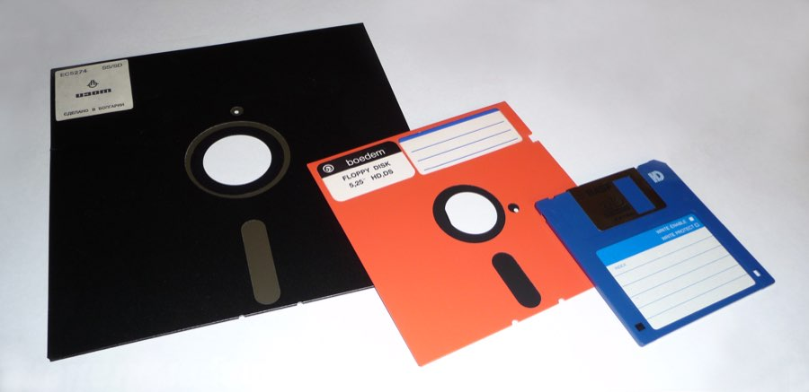

科学と文化
スマホのシャッター音、ゴミ箱に紙を捨てる音、フロッピーディスクのアイコン。消えたはずの「もの」が、なぜデジタルの世界に住み続けているのか。
英国の医師ヘンリー・コリー・マーチが、ギリシャ語の skeuos（道具）と morphē（形）を組み合わせて「skeuomorph」という語を造語。
同年の世界：パリ万博開幕、エッフェル塔が世界最高の建造物として完成。米ペンシルベニアではジョンズタウン洪水が2,200人以上の命を奪った。
スキューモーフィズムが再び注目されたのは2007年、初代iPhoneの登場時。スティーブ・ジョブズはアイコンを実物そっくりに描かせた。そして2013年、ジョニー・アイヴがそのすべてをフラットデザインに塗り替えた。
スマートフォンで写真を撮る。カシャッ、と音がする。あの音が何の音か、考えたことがあるだろうか。一眼レフカメラのミラーが跳ね上がる音だ。だがスマートフォンにミラーはない。そもそも物理的なシャッターすら存在しない。鳴る理由がないのに、鳴っている。
パソコンでファイルをゴミ箱に入れると、紙をくしゃくしゃにする音がする。メールを送ると「シュッ」と封筒が飛んでいく音がする。どれも実体がない。紙もない、封筒もない。なのに音が鳴ると、私たちは「できた」と安心する。
これはただの演出ではない。人間が新しいものを受け入れるために、古いものの痕跡を必要とする——デザインの世界では、これをスキューモーフィズムと呼ぶ。
この記事では、デジタルの世界に残された「古いものの痕跡」を見つけ出し、その痕跡がなぜ人を安心させるのかを追う。見慣れた画面から痕跡を一つずつ剥がしたとき、自分の中に生まれる感覚の変化を観察する体験がある。
1889年、イギリスの医師で考古学愛好家だったヘンリー・コリー・マーチは、奇妙なことに気づいた。古代の陶器に、金属の鋲鋲（びょう / Rivet）金属板どうしを接合するために打ち込む留め具。壺や鎧など金属製品では構造的に不可欠だったが、陶器では純粋な装飾として模倣された。を模した装飾が施されている。その鋲は金属製の壺なら構造的に必要だったが、陶器には何の機能もない。なのに職人はわざわざ粘土で鋲の形を作り、表面に貼り付けていた。マーチはこの現象に名前をつけた。ギリシャ語のskeuos（道具）とmorphē（形）を組み合わせて、スキューモーフSkeuomorph（スキューモーフ）ある素材や技術で必要だった構造的特徴を、それが不要になった新しい素材や技術でも装飾として残すこと。または残されたもの自体を指す。。
スキューモーフィズムの構造はつねに同じだ。旧い素材で必要だった要素が、新しい素材では不要なのに、見た目や音として残る。
ギリシャ神殿のドリス式円柱にも同じ痕跡がある。石で作られたトリグリフトリグリフ（Triglyph）ドリス式建築のフリーズに繰り返し現れる三本溝の装飾。元は木造建築の梁の端を彫ったもので、石造に移行した後も装飾として残った。は、かつて木造建築だった時代の梁の端をそのまま石に翻訳したものだ。構造上は不要だが、「神殿はこう見えるべきだ」という期待がそれを残した。
アテネ、ヘファイストス神殿（紀元前5世紀）のフリーズ。縦溝の入った矩形がトリグリフ、その間の浮彫りがメトープ。ここに見えている石の細部は、木造神殿だった時代の梁の端の記憶である。（撮影: George E. Koronaios, CC BY-SA 4.0）
これはデジタルだけの話ではない。今あなたがジーンズを履いているなら、ポケットの角を見てほしい。小さな金属の鋲がある。あれは19世紀、布の縫い目が裂けないための補強金具だった。今の縫製技術ならなくても問題ないが、「ジーンズとはこういうものだ」という期待が、150年以上あの鋲を残し続けている。
✗ よくある誤解
スキューモーフィズムは「レトロ風デザイン」のことだ
✓ 実際は
見た目だけでなく音・操作感・概念すべてに及ぶ。懐古趣味とは異なり、新しい技術への認知的な「橋」である
✗ よくある誤解
Appleがフラットデザインに移行して死んだ
✓ 実際は
革の質感は消えたが、シャッター音・保存アイコン・ゴミ箱メタファーなど多くのスキューモーフは今も健在だ
✗ よくある誤解
デジタル特有の現象だ
✓ 実際は
陶器、建築、自動車、電球——素材の転換がある場所には必ず現れる。紀元前からの人間の普遍的傾向だ
マーチが造語してから100年以上、この概念は考古学の片隅に眠っていた。それが突然、世界中の人の掌の上に現れたのは2007年のことだ。
2007年、スティーブ・ジョブズが初代iPhoneを世界に見せたとき、画面には見覚えのあるものが並んでいた。電話のアイコンは緑色の受話器。カメラのアイコンはレンズの絞り。メモアプリは黄色の罫線付きレターパッド。人間がこの小さなガラスの板を手にしたのは初めてだった。触れたこともない、ボタンのない機械。だからAppleは、画面の中を「見たことのあるもの」で埋め尽くした。
この方針を推進したのは、iOS担当上級副社長のスコット・フォーストールScott Forstall（1969–）Apple初期のiOSソフトウェア責任者。スキューモーフィックデザインの強力な推進者。2012年に退任。だった。カレンダーアプリには手帳風の革のステッチ。Game Centerにはカジノのフェルト。Podcastアプリはリールテープレコーダー。すべて「この画面の中に、あなたの知っている世界がありますよ」というメッセージだった。
"Skeuomorphic is the technical term for incorporating old, familiar ideas into new technologies, even though they no longer play a functional role. … One way of overcoming the fear of the new is to make it look like the old."
「スキューモーフィックとは、古くて馴染みのある概念を新しい技術に取り込むことを指す専門用語だ。もはや機能的な役割はない。……新しいものへの恐怖を克服する方法のひとつは、それを古いものに見せかけることである。」
— Donald Norman, The Design of Everyday Things（2013年改訂版）
2012年秋、フォーストールが退任した。代わってジョナサン・アイヴがソフトウェアデザインも統括し、2013年のWWDCWWDC（Worldwide Developers Conference）Appleが毎年6月に開催する開発者向けカンファレンス。新しいOS・ソフトウェアの発表の場として知られ、iOS 7の発表もここで行われた。でiOS 7が発表された。革は消え、フェルトは消え、木目は消えた。アイヴはこう語った。「人々はすでにガラスに触ることに慣れた。物理的なボタンの参照は、もう必要ない」。スキューモーフィズムの「視覚」は確かに後退した。だが「音」はどうだろう。
スキューモーフィズムの本質は、あるときには気づかないが、ないと不安になるという点にある。言葉で説明されてもピンとこないかもしれない。だから実際にやってみよう。
下にスマートフォンの画面がある。よく見るアイコンが並んでいて、ステータスバーには電波やバッテリーの表示もある。「次を剥がす」ボタンを押すたびに、スキューモーフ——つまり「古いものの痕跡」——が1つずつ消えて、抽象的な記号に置き換わる。各ステップで「この画面、安心して使えそうか」を直感で答えてほしい。何度でも選び直せる。正解はない。自分の中の感覚を観察するだけだ。
Step 0 / 5 — すべてのスキューモーフが残っている状態
まず初期状態を確認。準備ができたら「次を剥がす」を押してください。
あなたの安心感の変化
スキューモーフは、あるときには気づかない。だが剥がされた瞬間、それが自分を支えていたことに気づく。
なぜ人は、必要のない痕跡を残すのか。認知科学の視点から見ると、スキューモーフィズムは「学習コストの削減装置」だ。未知のものを既知のものに見せかけることで、人は新しい道具を恐れずに手に取れる。
ドナルド・ノーマンは著書の中で、この認知の橋を文化的制約文化的制約（Cultural Constraint）ノーマンが定義した4つの制約のひとつ。文化の中で学習された慣習がユーザーの行動を導くこと。赤は「止まれ」、ゴミ箱は「捨てる」など。の一形態として位置づけた。スキューモーフはその慣習を視覚や聴覚で呼び起こす装置だ。
スキューモーフが機能する3つの段階
フロッピーディスクのアイコンを見て「保存」と理解できるのは、その文化的記憶があるからだ。第一段階は「これはアレだ」という即座の認識。
ゴミ箱を認識すれば「不要なものをここにドラッグすればいい」と推測できる。教わらなくても使い方がわかる。これがノーマンの言う「発見可能性」だ。
ファイルをゴミ箱に入れると「くしゃっ」と音がする。ビープ音では足りない。「紙を丸める音」だからこそ、「捨てた」と感じられる。先ほどの体験でスキューモーフを剥がされたとき感じた違和感は、この第三段階が失われた状態だ。
スキューモーフは「認識→推測→安心」の3段階で認知的負荷を下げる。逆に言えば、元ネタを知らない世代には橋として機能しなくなる。
スキューモーフィズムの最も興味深い展開は「音」の領域で起きている。2019年7月、EUは新型の電気自動車にAVASAVAS（Acoustic Vehicle Alerting System）電気自動車用の音響式車両接近通報装置。時速20km/h以下で人工的な音を発し、歩行者に存在を知らせる。2019年7月からEUで義務化。——音響式車両接近通報装置音響式車両接近通報装置AVASの日本語訳。車体下部のスピーカーから音を出し、速度に応じてピッチや音量が変化する。56〜75dB（電動歯ブラシからシュレッダー程度）の音量範囲で規定されている。——の搭載を義務化した。電気自動車は低速ではほぼ無音で走る。これが歩行者にとって危険だという判断だ。
面白いのは、人工音が「エンジン音そのもの」である必要はないが「車両の挙動を連想させる音」でなければならないと規定されている点だ。BMWは映画音楽の作曲家ハンス・ツィマーにEVの走行音を依頼した。ジャガーが試作した宇宙船風の警告音は、テストで歩行者が空を見上げてしまい再設計を余儀なくされた。音は「車っぽく」なければならなかったのだ。
一方、日本では2000年代初頭にカメラ付き携帯電話の盗撮が社会問題化し、通信キャリアとメーカーが自主規制としてシャッター音を消せない仕様を導入した。法律ではなく業界の自主規制だが、iPhoneを含む日本向け全端末がこれに従っている。結果的に日本は、「写真を撮る＝音が鳴る」というスキューモーフを最も強固に保存した国になった。
音だけではない。形にも同じことが起きている。多くの電気自動車の前面には、大きなグリル（格子状の開口部）がある。内燃エンジン車ではエンジン冷却のために空気の取り入れ口が必要だったが、EVにはその必要がほぼない。それでもグリルは残っている。「車の顔」にはグリルがあるべきだ、という期待がデザインを支配しているからだ。
車の正面を簡略化。左はエンジン冷却のためにグリルが不可欠。右のEVには冷却口が要らないのに、「車の顔」としてグリルが残っている。破線は機能を失った装飾を示す。
1889
ヘンリー・コリー・マーチが「skeuomorph」を造語
陶器に残された金属鋲の装飾を分析し、素材転換時に形が残る現象に名前をつけた。
1984
Apple Macintoshが「デスクトップメタファー」を採用
ファイル、フォルダ、ゴミ箱。物理的なオフィスの概念をそのまま画面に持ち込んだ。
2007
初代iPhone発売——スキューモーフィズム全盛期へ
アプリは実物の質感を徹底再現。画面全体が「見たことのあるもの」で構成された。
2013
iOS 7発表——フラットデザインへの転換
アイヴが革と木目を剥がし、半透明の世界に置き換えた。だがシャッター音とゴミ箱メタファーは残った。
2019
EU、電気自動車に人工走行音（AVAS）を義務化
「音のスキューモーフ」に法的拘束力が与えられた初のケース。
フロッピーディスクを使ったことがない世代にとって、保存アイコンは「保存ボタンの形」であって、「フロッピーディスクの形」ではない。参照元を知らないまま、記号だけが生き残っている。スキューモーフは時間とともに橋としての機能を失い、純粋な記号に変わっていく。
参照元が消えても記号だけが残る。それが文化というものなのかもしれない。
電気自動車の話に戻ろう。EVの走行音をゼロからデザインするとき、エンジン音を模倣するのか、まったく新しい音を創るのか。ジャガーの宇宙船風の音が失敗したのは、人間の「車はこういう音がする」という期待を裏切ったからだ。だがいつか、子どもたちがEVの人工音を「車の音」として育ったとき、エンジン音こそがスキューモーフになる。
スマートウォッチの文字盤も面白い例だ。Apple Watchには何十種類もの文字盤が用意されていて、デジタル表示を選ぶ人もいれば、針が回るアナログ表示を選ぶ人もいる。だがそもそも、コンピューターの画面にアナログの針を描く必然性はどこにもない。それでもアナログ文字盤が選択肢として存在し続けていること——そしてそれを選んだときに感じる、なんとなくの「しっくり感」——が、スキューモーフの力を静かに証明している。
文化への登場
『誰のためのデザイン？（The Design of Everyday Things）』（2013年改訂版）
認知科学者ドナルド・ノーマンによるデザイン原則の古典。スキューモーフィズムを「文化的制約」の一形態として位置づけた。
iOS 7 発表映像（2013年 WWDC）
ジョナサン・アイヴが4分間の映像でフラットデザインの哲学を語った。スキューモーフィズムの「死」を宣告したとされるが、アイヴは一度もその単語を口にしていない。
Hans Zimmer × BMW — IconicSounds Electric（2019年〜）
映画音楽の巨匠がBMWの電気自動車用サウンドを手がけた。エンジン音の模倣ではなく、新しい聴覚体験を創る試み。
私はこの記事をキーボードで書いている。キーを押すたびにカチカチ音がする。メカニカルキーボードの音は、タイプライターのキーストロークの名残だ。だが正直に言えば、私はこの音が好きで使っている。機能ではなく、「書いている感じ」がするから。スキューモーフは合理性だけでは説明できない。そこには、感情がある。

3.5インチのフロッピーディスク。物体そのものは消えたのに、保存ボタンのアイコンだけが今も画面の中で生き残っている。（撮影: Shelby Jueden, CC BY-SA 4.0）
The Design of Everyday Things（改訂版）
デザインの認知科学的原則を解説した古典。スキューモーフィズムを「文化的制約」として位置づけた箇所が本記事の理論的基盤。
The Meaning of Ornament; or its Archæology and its Psychology
「skeuomorph」の初出文献。陶器の鋲装飾を分析し「期待が形を残す」原理を論じた。
iOS 7発表直後のTIME誌特集。マーチの造語から2013年のフラットデザイン論争まで一望できる。
Regulation (EU) No 540/2014 — AVAS義務化
電気自動車の音響式車両接近通報装置に関するEU規制。「車両の挙動を連想させる音」という要件がスキューモーフ設計そのもの。